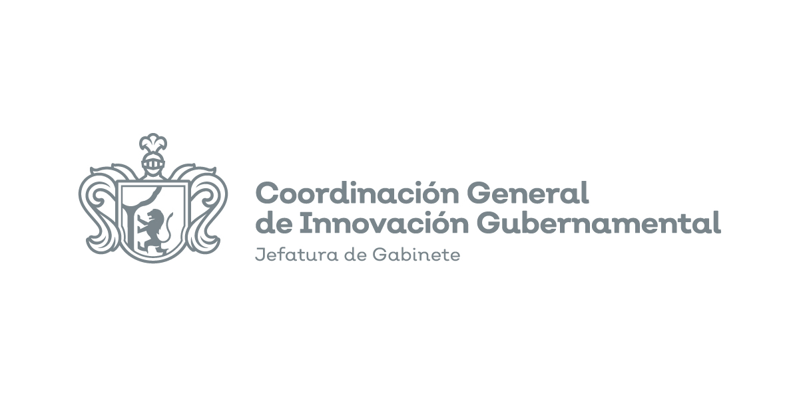

Full-stack AI product
AulaLLM
Classroom platform with an integrated AI assistant, professor and student roles, content sections, submissions, grading, file uploads, JWT auth and Docker deployment.
Applied AI / Data Platforms / Backend Systems
I design and build AI products, retrieval workflows, agentic tools, APIs, data pipelines and deployment-ready services for real operational contexts.


Bachelor's degree completed.
M.Sc. in Data Science EngineeringCurrently in progress.
I like building the connective tissue between models, data, APIs, infrastructure and the people who need to use them.
Skill map
The strongest overlap in my work is practical AI, data engineering, backend architecture, deployment and tooling for repeatable software delivery.
RAG, vector search, semantic ranking, tool calling, MCP/FastMCP, LangChain, Deep Agents, prompt design and Spanish embedding evaluation.
Python APIs, modular services, authentication, SQL data layers, file workflows and user-facing integrations.
ETL pipelines, model evaluation, NLP, OCR, computer vision, experiment tracking and reproducible notebooks/scripts.
Linux servers, Dockerized services, cloud deployments, CI/CD, VPNs, observability and institutional operations.
Project instructions, reusable prompts, coding agents, skills, review flows and structured scaffolding for consistent software delivery.
Built work
A practical mix of full-stack AI products, RAG research, agents, data tooling, infrastructure and teaching material built from 2024 to 2026.
Classroom platform with an integrated AI assistant, professor and student roles, content sections, submissions, grading, file uploads, JWT auth and Docker deployment.
Spanish RAG embedding benchmark with FAISS retrieval, Hit@K, MRR and nDCG metrics, model comparisons and SLURM/DGX execution for thesis research.
Conversational LLM agent with tools, session memory and three interfaces: Chainlit UI, FastAPI REST API and CLI, packaged with Docker.
Python CLI for generating Spanish synthetic Q&A and reasoning datasets from documents using local LLMs, LangChain, Ollama and Docling.
Smart form builder with conditional logic, dynamic field types, FastAPI backend, TypeScript frontend, PostgreSQL storage and Docker deployment.
Reusable Copilot instructions, prompts, agents, hooks and skills for generating consistent FastAPI, SQLAlchemy, Docker, ETL and testing workflows.
Practical local LLM workshop covering generation, chat, JSON output, embeddings, simple RAG and tool-using agents with Ollama.
WireGuard VPN deployment template for institutional remote access, with split tunnel, client lifecycle scripts, routing/NAT modes and operational documentation.
Docker Compose homelab with reverse proxy, dashboards, monitoring, password management, automation, CI/CD and PostgreSQL services.
Image detection API for fruits and vegetables, useful as an early example of model serving and computer vision integration.
Minimal implementation for training and testing a small GPT-style language model from text data, built as a foundations project.
Notebooks and scripts around text similarity, data augmentation and NLP experimentation, connected to later work with embeddings and retrieval.
Experience
The thread across my work is taking technical ideas into systems that can be used, maintained and improved inside real organizations.
GenAI apps, RAG over documents and databases, FastAPI services, MCP integrations and AI-assisted delivery workflows.
Internal software solutions, LLM retrieval systems, ETL coordination and Linux/cloud deployments.
Data collection systems, RAG agents, OCR/object detection, Airflow pipelines and Superset dashboards.
FastAPI inference APIs, ONNX Runtime, MLflow, DVC, GitHub Actions and labeling pipelines.

AI analysis pipelines, production inference APIs, CNN models and NVIDIA DGX A100 infrastructure.
Automotive production support, software releases, issue resolution and automation scripts for engineering workflows.
Technical material
I also document patterns and build teaching material when a workflow is useful enough to repeat, share or standardize.
Material about the AI landscape before and after LLMs, including agentic patterns.
Guide Design Pattern AgentSpanish documentation and examples for GoF design patterns in Python.
Workshop Vibe Engineer GuidePractical material for shaping GitHub Copilot with instructions, prompts, agents and skills.